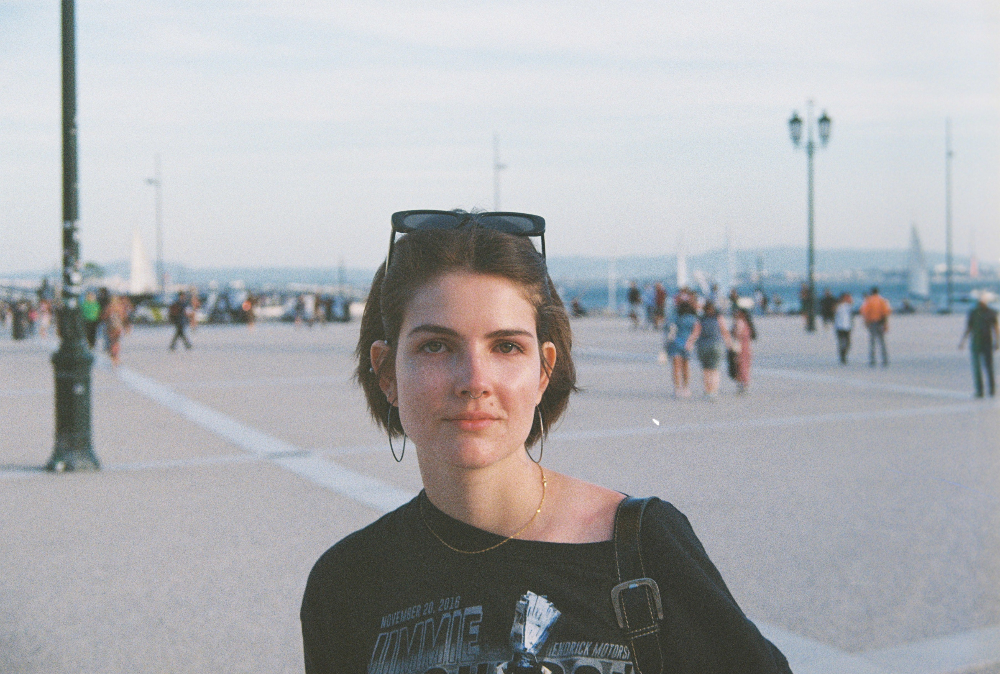

Penguin Techno
Music app to search for techno events near you. Scalable UI system built using Atomic Design principles. Focused on reusable components and visual consistency.
Case Study Figma PrototypeI’m a curious creative and critical thinker who enjoys exploring how things work, understanding people’s needs, and finding thoughtful ways to make experiences better. With a multidisciplinary background across design, digital experiences, front-end development and languages, I bring a diverse perspective to every project. I’m passionate about turning ideas into clear, engaging, and meaningful solutions through creativity, collaboration, and problem-solving.Take a look at my work below, and feel free to get in touch if you’d like to know more!
Learn more about me here
Music app to search for techno events near you. Scalable UI system built using Atomic Design principles. Focused on reusable components and visual consistency.
Case Study Figma Prototype
Component library created to stremline design workflows. It includes standardized elements like buttons, inputs etc. This library helps maintain a unified visual style, speeds up design production and helps make efficient updates.
Case Study Figma File
In the last 10 years smartphones have changed the way the live and interact with our surroundings. A study conducted in 2023 found that only 27.5% of Spanish restaurants manage their internal operations with an integrated application. According to a report carried out in 2022 by the Bank of Spain, 32% of Spaniards pay by card on a daily basis. This was my final degree project and app that encapsules booking, order and paying in a restaurant.
Case Study
The museum of cinema located in Girona opened in 1998 the first of its kind in Spain. Its aim is to become a centre of dynamism in the world of cinema and visual arts. This was a semester-long project in my Interface Design course. The assignment was to give a fresh design to the former web.
Case Study Figma File